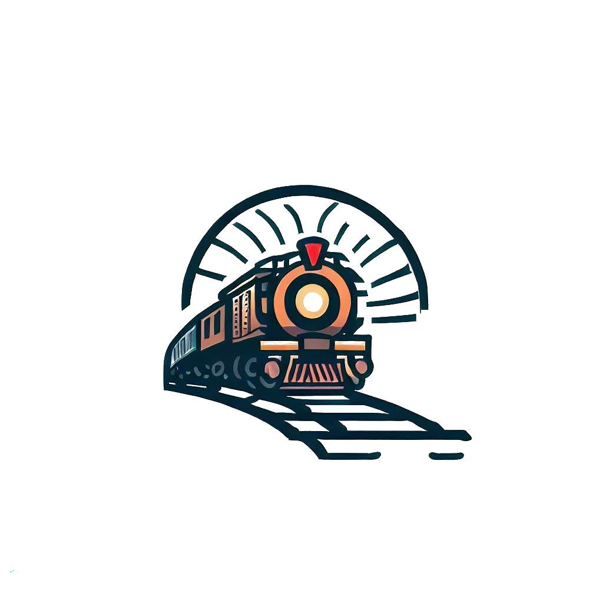
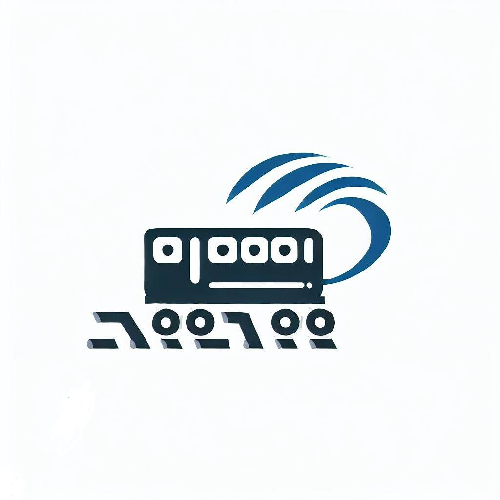

SL (Steam Locomotive)
A steam locomotive is a locomotive that provides the force to move itself and other vehicles by means of the expansion of steam.
It is fuelled by burning combustible material (usually coal, oil or, rarely, wood) to heat water in the
locomotive’s boiler to the point where it becomes gaseous and its volume increases 1,700 times.

DL (Diesel Locomotive)
A diesel locomotive is a type of railway locomotive in which the prime mover is a diesel engine. Several types of diesel locomotives have been developed, differing mainly in the means
by which mechanical power is conveyed to the driving wheels. Early internal combustion locomotives and railcars used kerosene and gasoline as their fuel.